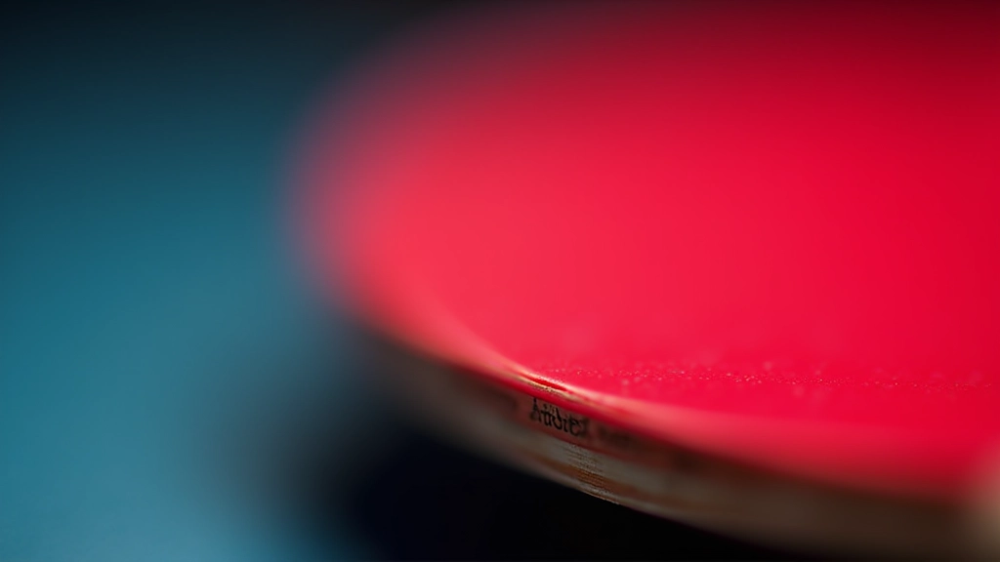
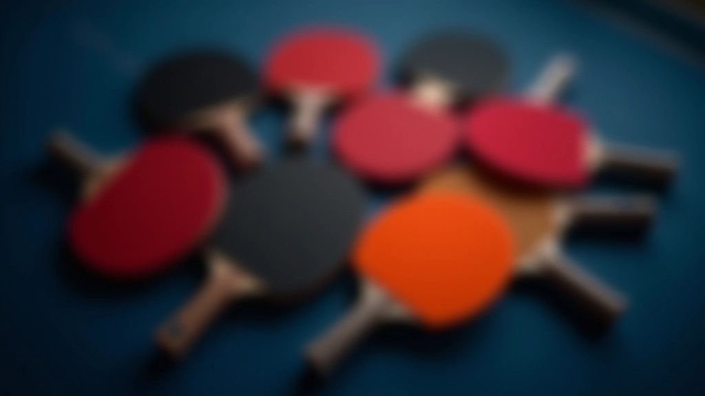
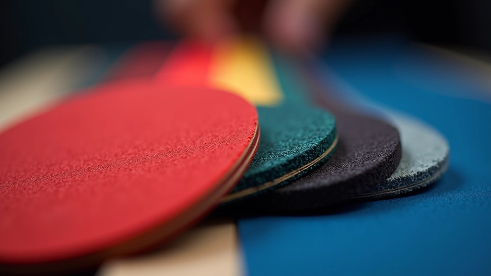

اختر مضربك وسطحك بذكاء
دليل شامل لاختيار أفضل معدات تنس الطاولة المناسبة لأسلوب لعبك
سواء كنت مبتدئاً تخطو أولى خطواتك أو لاعباً متقدماً تسعى للتطور، ستجد هنا كل ما تحتاج معرفته عن المضارب والأسطح المختلفة وكيفية اختيار ما يناسبك.


المميزات الأساسية
كل ما تحتاج معرفته
اكتشف العناصر الأساسية التي تؤثر على اختيارك للمعدات الصحيحة
أنواع الأسطح
تعرف على الفرق بين الأسطح السريعة والبطيئة، والأسطح الموجهة والمستقيمة. كل نوع يؤثر على سرعة الكرة والدوران والتحكم بشكل مختلف. اختيارك يعتمد على أسلوب لعبك وتطورك.
القياسات والوزن
يؤثر وزن المضرب وتوازنه على سهولة المناورة والقوة.
الإحساس واللمسة
الحس الجيد بالكرة ضروري لتطور اللعبة والتحكم الدقيق.
مستويات اللعب
المبتدئون يحتاجون إلى مضارب متسامحة سهلة التحكم. اللاعبون المتقدمون يبحثون عن دقة أعلى وأداء متخصص. هناك معدات مناسبة لكل مستوى ومرحلة من رحلتك.
خطوات الاختيار
كيف تختار المعدات المناسبة
حدد أسلوبك
هل أنت لاعب هجوم يفضل السرعة والقوة، أم لاعب دفاع يركز على التحكم والصبر؟
اعرف مستواك
حدد مستوى لعبك الحالي لاختيار معدات تساعدك على التطور دون إحباط.
ادرس الخيارات
تعرف على الماركات المختلفة والمواصفات والأسعار قبل اتخاذ قرارك.
اختبر وقرر
إذا أمكن، اختبر المضرب قبل الشراء. التجربة الفعلية أفضل من الوصف.
رحلتنا
تطور منصتنا
نسعى باستمرار لتقديم محتوى عملي وموثوق لمجتمع تنس الطاولة
بدأنا بنشر أولى الأدلة العملية لاختيار معدات تنس الطاولة
أضفنا أدلة تفصيلية لأسلوب اللعب والمستويات المختلفة
وسعنا محتوانا ليشمل مقارنات معمقة بين أنواع الأسطح المختلفة
أضفنا ملاحظات حول الاعتبارات الخاصة للاعبي المستويات العالية
استمرنا في تحديث المحتوى بناءً على آخر التطورات في عالم تنس الطاولة
أحدث الأدلة
اقرأ المزيد
استكشف مجموعة كاملة من الأدلة والمقالات حول معدات تنس الطاولة
تعرف على كيفية اختيار السطح المناسب بناءً على أسلوب لعبك سواء كنت لاعب هجوم أم دفاع
نصائح عملية لاختيار مضرب جيد للبدء دون إنفاق الكثير من المال
شرح مفصل للفرق بين أنواع الأسطح المختلفة وتأثيرها على أسلوب لعبك
قيمنا
ما نؤمن به
نحن نركز على تقديم معلومات عملية وموثوقة لكل لاعب
الوضوح والشفافية
نقدم معلومات صريحة وموثوقة بدون تحيز تجاه ماركات معينة. هدفنا مساعدتك على اتخاذ قرار صحيح بناءً على احتياجاتك الحقيقية.
التطبيق العملي
كل ما نكتبه قابل للتطبيق في الملعب الفعلي. لا نؤمن بالنظريات المعقدة التي لا تساعدك على تحسين لعبتك.
المجتمع والتعاون
نعتقد أن تنس الطاولة رياضة جماعية تجمع اللاعبين بروح المنافسة الشريفة والاحترام المتبادل بينهم.
التطور المستمر
نحدث محتوانا باستمرار مع تطور الرياضة والمعدات. معرفتنا تنمو مع مجتمع اللاعبين.
ابدأ رحلتك
ماذا تريد أن تتعلم؟
تنس الطاولة
اختر معدات تناسبك
المقالات المختارة
اقرأ الأدلة الأساسية
أفضل الموارد لفهم اختيار معدات تنس الطاولة
اختيار السطح المناسب حسب أسلوب لعبك
تعرف على كيفية اختيار السطح المناسب بناءً على أسلوب لعبك سواء كنت لاعب هجوم أم دفاع
اقرأ المزيد
دليل المبتدئين لاختيار أول مضرب
نصائح عملية لاختيار مضرب جيد للبدء دون إنفاق الكثير من المال
اقرأ المزيد
الفرق بين الأسطح السريعة والبطيئة
شرح مفصل للفرق بين أنواع الأسطح المختلفة وتأثيرها على أسلوب لعبك
اقرأ المزيدهل لديك أسئلة؟
نحن هنا للمساعدة. تواصل معنا للحصول على استشارة شخصية حول اختيار المعدات المناسبة لك.
تواصل معنا الآننحن نستخدم ملفات تعريف الارتباط لتحسين تجربتك على الموقع. بمتابعتك للتصفح، أنت توافق على استخدامنا لها.